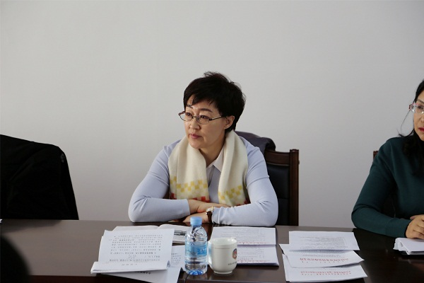

按照农工党自治区委和中共赤峰市委统战部关于开展“不忘合作初心，继续携手前进”主题教育活动方案的有关精神和农工党赤峰市委制定的主题教育活动方案，2019年12月15日，农工党赤峰市委组织召开了2019年度领导班子民主生活会。农工党赤峰市委主委、赤峰市政府副市长李艳茹主持会议。

会上，李艳茹代表农工党赤峰市委班子作对照检查，并带头作个人对照检查。班子成员分别结合各自学习情况、思想政治建设、组织建设、履职能力建设、作风建设、制度建设等方面的不足，针对政治把握能力、参政议政能力、组织领导能力、合作共事能力、解决自身问题能力的短板，深刻检视剖析，明确努力方向。每位班子成员检视剖析发言后，大家都提出中肯的意见和建议。

李艳茹主委在总结中指出：通过这次民主生活会的召开，进一步增强了树牢“四个意识”、坚定“四个自信”、坚决做到“两个维护”的政治自觉、思想自觉和行动自觉，进一步增强了贯彻落实习近平总书记重要讲话、指示批示精神和中共中央决策部署的政治自觉、思想自觉和行动自觉。每个人要根据剖析中存在的问题，深入研究、逐项整改，要针对问题、抓细抓小，能改即改，一时解决不了的限期改，确保整改到位，不断提高领导班子的履职能力和水平，以更加饱满的精神状态、更加务实的举措，带领广大党员为农工党事业再创辉煌而努力奋斗。